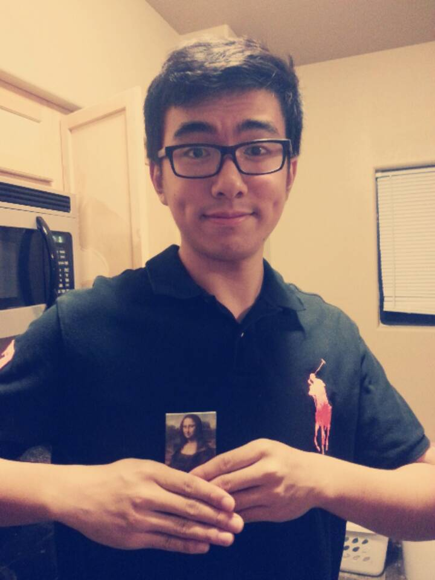

Yang's Page
About Me
By the Lake Superior
Hello, my name is Yang Liu, and I am a senior at University of Iowa studying to get my Accounting and BAIS major. I was born
and raised in Hangzhou, China. I came to the United States in 2010. Just like most Chinese students, I joined Tippie College of Business without knowing what I am going
to do in the future. I started as an accounting major because it is easier to find a well-paid job. In May 2013 I finished all accounting courses and then, interestingly,
got an internship offer to do IT Advisory. Finally I decided to add BAIS as my second major because I believe this is what I will be doing in a long run.
I am good at playing NO SPORTS, but I am a big sports fan. Soccer is my favorite sport and I watch soccer games whenever I have time. My favorite soccer team is Tottenham Hotspur
and my favorite Tottenham player is Erik Lamela. After coming to Iowa, I found that there are not so many people talking about soccer. In order to fit in this new community, I started watching
football. Later it turned out that football is too complicated for me to understand, so I gave up watching football and turned to watch NBA. Now I am a fan of New Orleans Pelicans and Anthony
Davis.

A funny photo of myself
One thing about myself ...
I am color blind. So please don't be surprised if one day I say I like your red t-shirt when you are actually wearing a green one. You may wonder if
I have suffered from identifying those background colors and font colors when I am dealing with the css formatting. Yes, I did suffer, and that's why my page is mostly BLACK and WHITE.